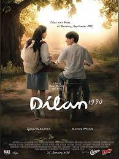
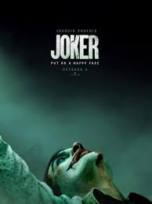
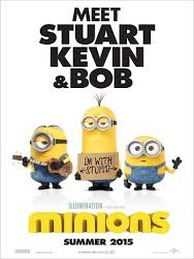
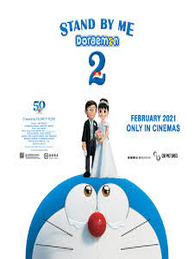
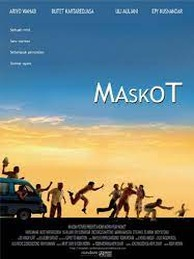
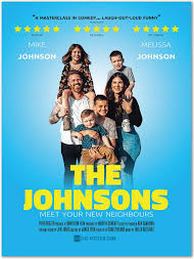
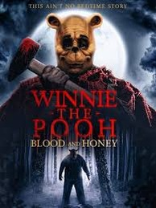
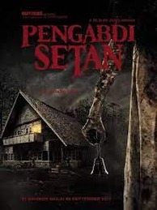
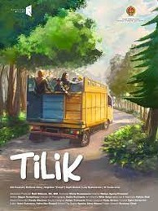
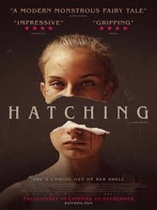

/vidio-web-prod-headline/uploads/headline/premium_image/11891/the-nanny-diaries-fef17b.jpg)
/vidio-web-prod-headline/uploads/headline/premium_image/15458/naruto-shippuden-297fc5.jpg)
Menonton film di bioskop bisa menjadi hiburan yang sangat menyenangkan, tetapi apa yang harus dilakukan ketika kita tidak memiliki waktu atau kesempatan untuk pergi ke bioskop? "Nonton-Q", sebuah platform streaming film online, adalah solusi yang tepat untuk Anda.
Dalam beberapa tahun terakhir, layanan streaming film online telah menjadi populer di seluruh dunia. "Nonton-Q" adalah salah satu platform terbaik untuk menonton film secara online di Indonesia.
Dengan kualitas premium 4K dan suara Dolby Stereo platform "Nonton-Q" siap untuk menemani anda dan hari-hari anda!!!









